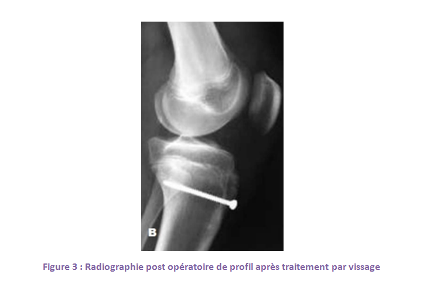
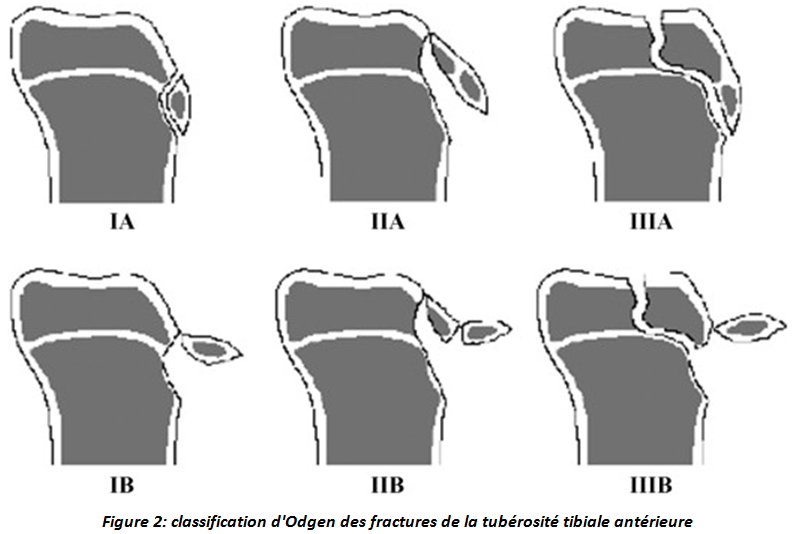
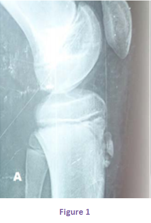
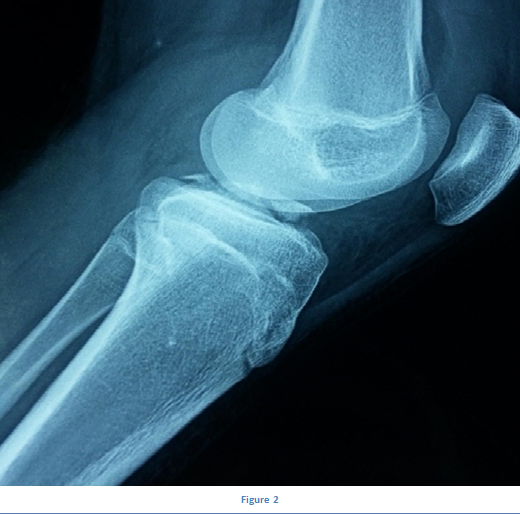
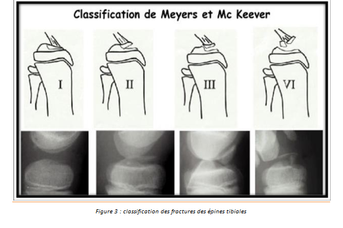

Cas clinique 15
Genou
Patient de 15 ans, sans antécédents pathologiques particuliers, s’était présenté aux urgences suite à un traumatisme du genou gauche lors d’un accident de sport.
On avait observé à l’examen clinique une impossibilité d’extension active du genou gauche associée à une voussure douloureuse au niveau de la tubérosité tibiale antérieure.
1. Interprétez la radiographie. Quel est votre diagnostic ? Figure 1 R1 C1
2.Quelle est votre attitude thérapeutique ?R2
3. Quelles sont les complications possibles ?R3
Réponse :
Radiographies de profil de genou gauche d’un garçon de 15 ans objectivant une fracture de la tubérosité tibiale antérieure classée stade II d’Ogden.
Réponse :
Au bloc opératoire, réduction et par vissage puis immobilisation par plâtre cruropédieux pendant 4 à 6 semaines.

- -L’évolution en recurvatum est exceptionnelle car ces lésions surviennent chez des adolescents en fin de croissance.
- -Des syndromes de loge ont été décrits justifiant une surveillance post opératoire attentive.
Le pronostic est excellent.
Réponse :
- Lésions ligamentaires associées.
- Lésions méniscales associées.
Réponse :
- Lésions ligamentaires associées.
- Lésions méniscales associées.
- Laxité résiduelle par distension du LCA ou par réduction insuffisante.
- Diminution des amplitudes articulaires du genou après immobilisation prolongée ou par réduction insuffisante.
Commentaire :
Classification des fractures de la tubérosité tibiale antérieure selon Odgen :
Type I : Avulsion simple du centre d’ossification.
- : non déplacée.
- : déplacée.
Type II :
- : Séparation de la tubérosité tibiale antérieure.
- : Communition du centre d’ossification.
Type III :
- : Extension du trait de fracture à l’articulation du genou.
- : Communition du fragment.

Commentaire :
Commentaire :
- Fracture type 1 : Traitement orthopédique par immobilisation cruro-pédieuse genou en extension.
- Fracture type 2 : Réduction sous anesthésie générale par extension du genou puis immobilisation cruro-pédieuse genou en extension.
Traitement chirurgical si traitement orthopédique inefficace.
- Fracture type 3 et 4 : Réduction et ostéosynthèse chirurgicale par arthroscopie ou arthrotomie puis immobilisation cruro-pédieuse genou à 20 degré de flexion.
Commentaire :
Figure 1

Figure 1

Classification de Meyers et Mc Keever :
- TYPE 1 : Fracture incomplète sans déplacement ou déplacement minime de la partie antérieure du fragment.
- TYPE 2 : Fracture complète avec persistance d’une charnière postérieure cartilagineuse qui limite le déplacement à un soulèvement de la partie antérieure du fragment.
- TYPE 3 : Séparation complète du fragment. Le fragment est souvent attiré vers le haut se plaçant au dessus de la corne antérieure du ménisque médial et parfois latéral. Cette interposition explique l’impossibilité de réduire orthopédiquement certaines de ces fractures.
- TYPE 4 : Fracture comminutive.

Références
- Bauer , A. Milet , T. Odent , J.-P. Padovani , C. Glorion
Fracture-avulsion de la tubérosité tibiale antérieure chez l’adolescent
Revue de chirurgie orthopédique 2005, 91, 758-767.
- Henardp , Lyndrup P .
Avulsion fractures of the tibial tuberosity in adolescents.
Acta ortop. Belg., 1987,53,59-62
- Bérard J, Chotel F, Parot R, Durand JM.
Fractures autours du genou chez l’enfant.
In: Fontaine C, Vannineuse A, editors. Fractures du Genou. Paris, Berlin, Heidelberg, New York: Springer; 2005.p. 297-316.
- Lechevallier J.
Les traumatismes du genou chez l’enfant.
In: Ortho-Pédiatrie 4 Traumatologie membre supérieur, membre inférieur, divers. Une sélection des conférences, d’en seignement de la SOFCOT(1993)
- Benz, H. Roth, z. Zachariou.
Fractures and Cartilaginous Injuries of the Knee Joint in Childhood Kinderchirurg.
Abteilung des Chirurgischen Zentrums der Universität Heidelberg (Direktor: Prof. Dr. R. Daum) Eingegangen am 3. Dezember 1985
- Kraus· M. Kvehlík· G. Singer·J. Schalamon· E. Zwick · W. Linhart.
The epidemiology of knee injuries in children and adolescents;
Arch Orthop Trauma Surg (2012) 132:773–779.
- LEWIS E. ZIONTS • MAURICIO SILVA • SETH GAMRADT
Fractures around the Knee in Children Green's Skeletal Trauma in Children, pp.390-436 December 2015